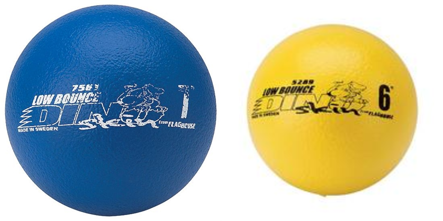
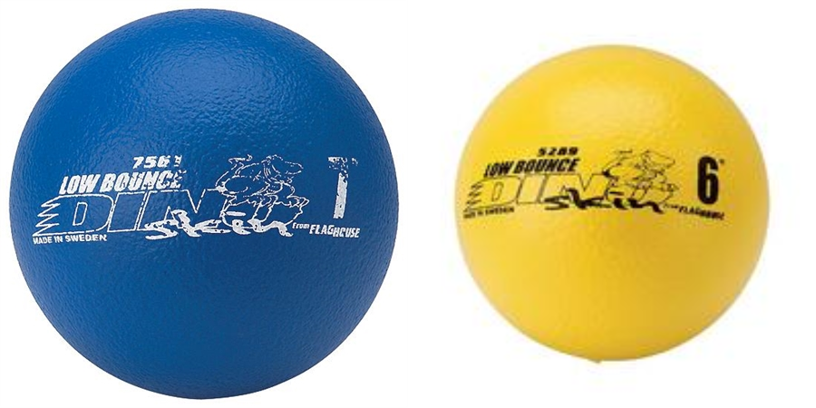

Description de la compétition CRC
La compétition de robotique Kryptik 2024, organisée par Robotique CRC, un programme de l`AEST, permet à des jeunes de tout le Canada qui ont un intérêt dans de multiples domaines tels que la programmation, la mécanique, le design artistique et technique, les langues, la communication et, bien sûr, la robotique, à concourir avec et contre des gens passionnés comme eux. La compétition se déroule du 11 au 13 avril 2024 à l'école secondaire Curé-Antoine-Labelle et se déroule sur 3 jours. La compétition est séparée en 7 composantes :

Description du jeu
Deux équipes (les jaunes et les bleus), chacune composée de deux écoles, devront lancer les ballons (qui sont au nombre de 42) vers des cibles. Si un ballon est intentionnellement gravement endommagé par un robot, l'équipe a une pénalité et doit le remplacer.
Après avoir vu comment marche une partie dans les grandes lignes, regardons en détail le score et une partie.
Tout d'abord, regardons les rôles. Il y en a trois : le pilote, le co-pilote et l'arbitre. Le pilote de chaque équipe a le rôle de conduire le robot et de le faire marquer, tandis que son copilote observe la partie. L'arbitre, qui, pour sa part, est neutre, a pour rôle de s'assurer d'une bonne partie et que le score soit mis à jour. Il est considéré comme l'expert du jeu, donc chaque décision est finale. Dans les 15 minutes suivant la partie, l'équipe peut contester avec une preuve, mais si elle abuse ça elle perdra son droit de contestation.
Il est important de connaitre les pénalités. Pour simplifier, voici les trois cas majeurs :
- Si une équipe juge que son robot a besoin d'assistance, elle peut appeller l'arbitre, mais le robot recevra une pénalité de 20 % sur son score.
- Un comportement agressif envers un autre robot ou un bénévole résultera en une pénalité déterminée par l'arbitre-chef.
- Si un robot perd une pièce, son équipe a une pénalité de 4 %. Si un robot fait tomber un liquide il aura DIRECTEMENT un score de zéro.
Enfin, maintenant que l'on connait certaines règles, allons en profondeur. Sur le terrain, il y a 2 catégories de cibles : les petites et les grandes. Les petites cibles rapportent 50 points quand le ballon rentre dans le trou et ressort par en bas, sinon s'il sort par en haut le score est de 25 points. La grande cible vaut 250 points. Peut-on augmenter encore plus notre score ? Bien sûr que oui, puisque sur le terrain, il y a des piliers multiplicateurs en forme de cylindre. Plus une équipe a de ballons sur les piliers multiplicateurs, plus le score est multiplié, jusqu'à un maximum de 2,5 si l'autre équipe n'a aucun pilier actif.
Et puis, pour le tournoi : il a une structure qui vise à aider les équipes. Les rondes préliminaires durent deux jours. Comment ça se termine pour vous si vous perdez ? Êtes-vous éliminés ? Bien sûr que non, le repêchage est deuxième chance, mais une seule chance. Gagnez un repêchage et les quarts de finale et les demies finales vous attendent! Après le début des démontages de kiosque, la finale du tournoi débutera et il n'y aura qu'une seule équipe gagnante. Laquelle? Seul l'avenir nous le dira.
 

Progrès dans les composantes
Lors de la construction des composantes et du robot, la principale difficulté était de trouver du temps pour le construire. En effet, l'équipe s'ocupant de la construction du robot avait misé sur le modèle et ils ont compensés cela en travaillant durant la relâche du lundi au vendredi de 8h du matin jusqu'au midi.
Nous sommes désolées, mais nous ne pourrons pas détailler efficacement le processus de création du robot puisqu'il est encore, au moment de la remise du site web à la mi-mars, peu avancé. Tentez de vous imaginer un robot complété en observant les photos ci-dessous
Base du robot
Elle est mise à l'envers sur la photo. Le robot se déplace grâce à des roues Mecanum, ce qui permet des déplacements omnidirectionnels.

Modèle du premier système de ramassage et propultion des balles
Proposé par Mehmet, ce modèle est proche de celui qui a été adopté, mais un chose les distingue: il combine les systèmes de ramassage des balles et de propultion des balles. Des moteurs font tourner des bandes élastiques qui font monter les balles et tournent assez vite pour propulser les balles.

Schéma du système de ramassage des balles
Plus tard on a décidé de séparer le système pour rammaser/monter les balles et celui pour les propulser, car ils devront fonctionner indépendement lors de la partie. Le principe est le même, des moteurs font un effet de double tapis roulant et montent les balles, puis elles sont stockées pour être propulsées par un autre système.


Composition de l'équipe
Voici l'équipe de l'école pour la compétition de cette année et leurs rôles.
Maintenant que l'on connait les membres de l'équipe, regardons ce qui a été difficile et appris pour eux cette année.
-
Marc-Alexandre
Il a su mieux coder le HTML, mais il a rencontré une difficulté sur un bon résultat. Il a remédié à cela en divisant les bonnes tâches.
-
Yasmine
Elle a su apprendre le travail d'équipe, mais elle a manquer de motivation. Elle a remédié à cela en se reposant sur son amie.
-
Lâm
Il a mieux appris la gestion dans une équipe, mais il a rencontré un peu de difficulté dans la gestion du groupe. Il a résolu ce problème avec une bonne communication.
-
Mohamed Badis
Il a appris à mieux gérer une équipe, mais il a rencontré la majeure difficulté de la grève. Il a résolu ce problème en "réactivant le hamster" de l'équipe de mécanique.
-
Phœbe
Elle a appris à faire un meilleur code pour le robot pour avoir quelque chose à présenter cette année, mais elle a rencontré des difficultés sur le manque de système pour coder le robot. Elle a résolu ce problème en réglant et en donnant le meilleur code possible.
-
Antoine
Il a beaucoup appris sur le JavaScript, mais il a rencontré des difficultés sur le passage de ESP32 à Crcduino. Il a résolu ce problème en regardant le code de l'an passé.
-
Houda
Elle a appris à faire des plans, mais elle a rencontré une difficulté sur l'autorisation des autres pour commencer. Elle croit que résoudre ce problème signifie que les autres doivent être à leur affaire.
-
Aris
Il a appris le c++, mais a rencontré des difficultés sur les circuits électriques. Il a réglé cela en vérifiant les circuits.
-
Youssef
Il a appris la programmation, mais a rencontré des difficultés sur les connaissances impliquant les mathématiques. Il a résolu ce problème en se renseignant sur le sujet.
-
Louan-Élie
Il a appris à mieux conceptualiser, mais a rencontré des difficultés sur la gestion. Il a résolu ce problème en essayant de faire de meilleurs communications.
-
Goéry
Il a appris l'importance du travail en équipe, mais a rencontré une des difficultés majeures qui est le manque de temps. Il croit que le problème doit être résolu en travaillant plus sur le robot.
Je tiens à remercier Bahri, Amira et Mohammed qui ont observé et apporter certaines modifications cette année pour participer à la prochaine compétition.
Enfin, analysons en une simple phrase l'équipe. Elle a tout donné pour une participation cette année.